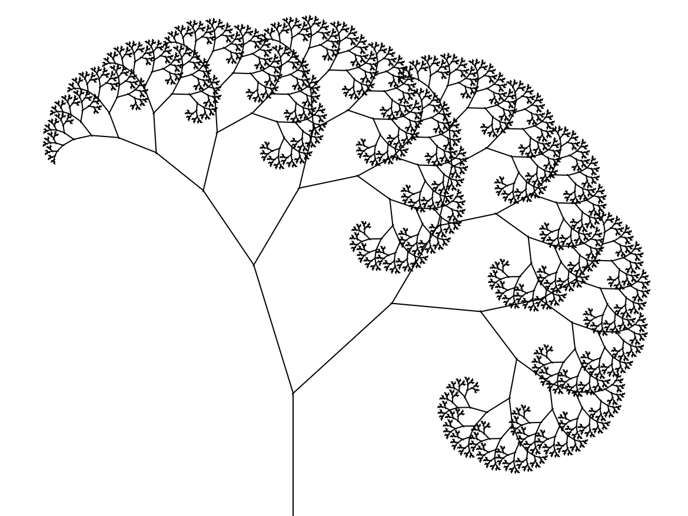
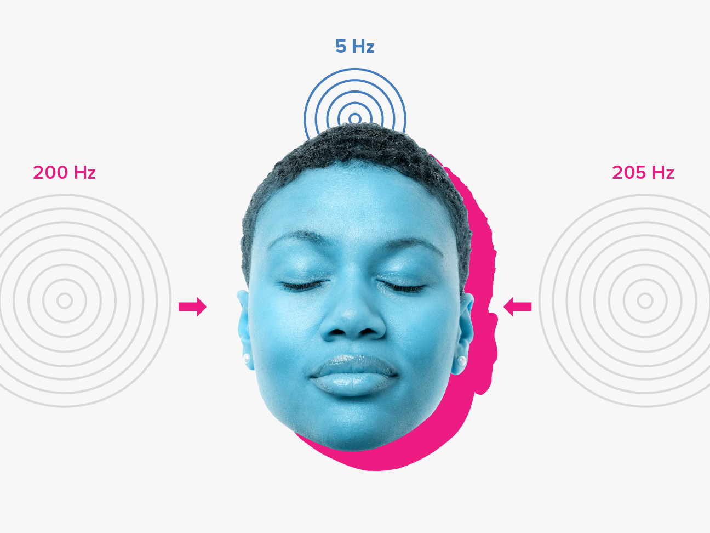
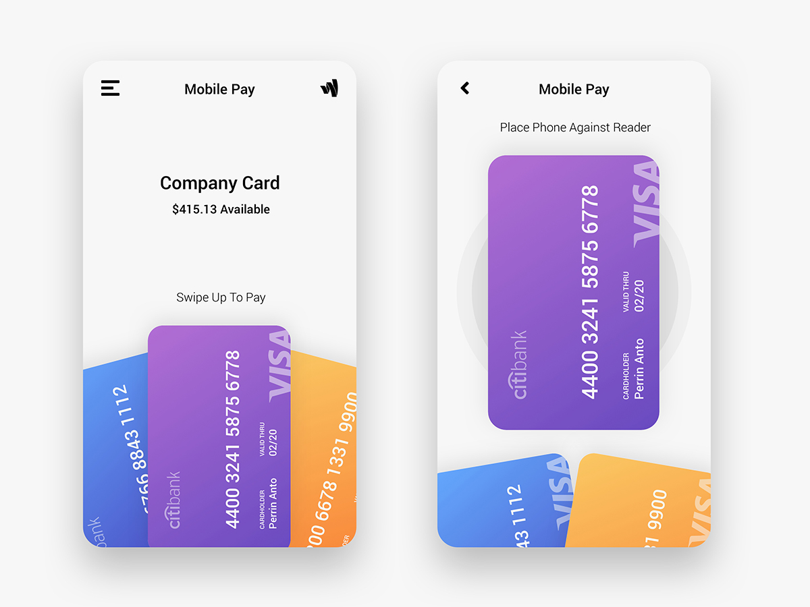

Perrin Anto.
That bowtie guy that loves design.

ABOUT ME
Welcome to my constantly evolving portfolio! I'm currently a junior in the middle of a year abroad at University of Sydney studying Design Computing, focusing on user experience design, product development, and design strategy. Back home, I study at Columbia University gaining interdisciplinary experience in Computer Science + Psychology. My favourite courses so far have included: Human Centred Design, Innovation Design, Interaction Design, Evolutionary Computation & Design Automation, and Information Visualisation Studio.
Currently @2hats running their product design and development as well as design consulting @Perrin Design Firm for startups and nonprofits. Outside of the realm of design, I'm the Assistant Vice President @Natangué Sénégal and Founder & Director @Homeless College Access Project driving policy changes around the world. Previously, I've done a variety of work including sound engineering @multi-grammy nominated artist performances, robotics design research @Hod Lipson's Creative Machines Lab, automated front-end software engineering @Valogix, and whipping up latté art perfection @Starbucks. I've gained a wide variety of perspectives from people and these experiences, and I'm excited to use them to further drive positive impact through design.
Outside of work, you can find me exploring the world on backpacking trips, tinkering with laser cut and 3D printed necklaces in the makerspace, listening to 99% Invisible podcasts or obsessing over the latest rupaul episode. I've been collecting bowties since I was a kid and now own over 40— you'll never catch me without one ⋈
This is 100 weight
This is 200 weight
This is 300 weight (available)
This is 400 weight (available)
This is 500 weight
This is 600 weight (available)
This is 700 weight (available)
This is 800 weight (available)
This is 900 weight
CURRENT PLAYLISTS

Creative Coding
Ways I'm using my computer science degree

Sound Designing
Creating the full audiovisual experience

Daily UI Challenge
Building interfaces for 100 days
GET IN TOUCH